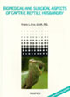
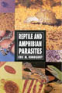
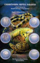
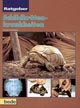

|


|

|

|
|
Enfermemedades de
los Reptiles.
Albert Mart�nez
Silvestre.
207 p�ginas, 2003,
Ediciones Reptilia. |
|
|
Manual cl�nico de reptiles.
Albert Mart�nez Silvestre.
169 p�ginas, 1995, Grass-Iatros
Ediciones. |
|
 |
|
|
Medicine and Surgery of Tortoises
and Turtles. Stuart
McArthur, Roger Wilkinson, Jean Meyer.
600 p�ginas, 2004, Blackwell
Publishing. |
|
 |
Biomedical and Surgical Aspects
of Captive Reptile Husbandry. Volumes I and II. Second
enlarged Edition. Fredric
L. Frye.
712 p�ginas, 1991, Krieger
Publishing Company. |
|
|
Health and Welfare of Captive
Reptiles. Clifford
Warwick, James B. Murphy, Fredric L. Frye
316 p�ginas, Kluwer Academic
Publishers, 2002. |
|
 |
Reptile and Amphibian Parasites.
Eric Rundquist.
64 p�ginas, 1995, T.F.H.
Publications. |
|
|
Reptile Clinician's Handbook.
Fredric L. Frye.
288 p�ginas, 1995, Krieger
Publishing Company. |
|
|
Reptile Medicine and Surgery.
Douglas R. Mader.
1264 p�ginas, 2005(2� edici�n),
Saunders. |
|
|
Self-Assessment Color Review of
Reptiles and Amphibians.
Fredric L. Frye, David L. Williams
192 p�ginas, 1995, Iowa State
Press. |
|
|
The Biology, Husbandry and Health
Care of Reptiles Vol. 1: The Biology of Reptiles.
Lowell Ackerman.
392 p�ginas, 1997, TFH
Publications. |
|
|
The Biology, Husbandry and Health
Care of Reptiles Vol. 2: The Husbandry of Reptiles.
Lowell Ackerman.
230 p�ginas, 1997, TFH
Publications. |
|
|
The Biology, Husbandry and Health
Care of Reptiles Vol. 1: The Health Care of Reptiles.
Lowell Ackerman.
446 p�ginas, 1997, TFH
Publications. |
|
 |
Understanding Reptile Parasites:
Manual for Herpetoculturists and Veterinarians.
Roger J. Klingenberg.
93 p�ginas, 1993,
Advanced Vivarium Systems,
Colecci�n "Herpetocultural Library". |
|
|
Veterinary Management of
Tortoises and Turtles.
Stuart Mc Arthur.
176 p�ginas, 1996, Blackwell
Publishing. |
|
|
Guide pratique des maladies des
reptiles en captivit�.
Lionel Schilliger, Didier Boussarie.
224 p�ginas, 2004, Med'Com,
coleccion "Guides pratiques". |
|
|
Pathologie des Tortues.
Christophe Arvy, Brieuc Fertard.
162 p�ginas, 2002, Soci�t�
Herp�tologique de France. |
|
|
Premier congr�s international de
patalogies des ch�loniens
Varios autores.
290 p�ginas, 1992, Editions
Soptom. |
|
|
Die Schildkr�te in der
tier�rztlichen Praxis.
U. Eggenschwiler.
150 p�ginas, 2005, Sch�neck
Verlag. |
|
 |
Schildkr�tenkrankheiten.
Lutz Sassenburg.
128 p�ginas, 2000,
Bede.
|
 
|
|